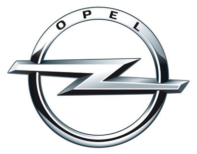

Компьютерная диагностика на дилерском оборудовании.
Любой ремонт начинается с диагностики. Современная компьютерная диагностика автомобиля широко востребована и незаменима для достижения цели поддержания автомобиля в надлежащем техническом состоянии.
Регулярная компьютерная диагностика необходима каждому автомобилю. Диагностика позволяет своевременно выявить любые, даже минимальные, сбои в работе систем, которые еще не очевидны, но могут иметь серьёзные последствия в будущем. При проведении диагностики и ремонта мы преследуем две основные цели - не тратить деньги клиента на замену не нужных деталей при поиске неисправности, и затратить минимальное время на нахождение истинной причины поломки. А при последующем ремонте сократить время поиска запчастей. При проведении диагностики мы используем только надежное и проверенное дилерское оборудование для конкретной марки автомобиля. После определения причины поломки мы производим полный ремонт, необходимый автомобилю.
Дилерское оборудование для диагностики таких машин как Mercedes, Opel, Renault, Citroen, Peugeot:
Сканер Mercedes Benz - MB Star C4 (Mercedes Star Diagnosis )
-
MB Star c4 тестирует системы:
- - Двигатель
- - Спидометр
- - Система кондиционера
- - SRS
- - ABS
- - ASR
- - MPL
- - GM
- - BENZ ORIGINAL-Theft DASX
- - KEYLESS система ввода
- - OBD-II СИСТЕМА
- - и др.
Сканер OP-COM Opel 
-
Возможности диагностики OP-COM :
- - идентификация ЭБУ автомобиля;
- - считывание и расшифровка кодов неисправностей;
- - стирание кодов неисправностей;
- - отображение параметров реального времени ( до 8 одновременно);
- - управление исполнительными механизмами;
- - кодирование блоков;
- - сброс базовых установок;
- - стирание и прописывание ключей иммобилайзера (при наличии пин-кода);
- - рассогласование и адаптация ЭБУ двигателя и иммобилайзера (при наличии пин-кода);
- - сброс сервисных интервалов.
- - корректировка одометра
Сканер Renault Can Clip
-
Функции системы диагностики Renault CAN Clip:
- - Отображает всю информацию о любом автомобиле Renault;
- - Автоматическое тестирование всех компьютерных систем автомобилей Renault;
- - Программирование электронных блоков управления;
- - Тестирование подушек безопасности Renault (Airbag);
- - OBD тесты;
- - Base Doc (Доступ к технической документации);
- - Поддержка протокола CAN;
Сканер Lexia3 поддерживают следующие диагностические функции:
-
Функции системы диагностики Renault CAN Clip:
- - Чтение идентификационных данных;
- - Чтение кодов неисправностей;
- - Стирание кодов неисправностей;
- - Автоматическое сканирование (полное сканирование автомобиля / тест);
- - Измерение рабочих характеристик;
- - Проверка приводов;
- - Функции программирования и адаптации;

Наш адрес: г. Минск, ул.Ваупшасова, 2.
Велком: (044) 579-83-38
МТС: (029) 279-83-38
E-mail: vicolaserviceplus@mail.ru